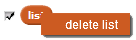

Informa todos os itens da lista
(Os itens são separados por espaços. No entanto, se todos os itens forem letras ou dígitos individuais, os espaços são omitidos.)
Clique na caixa de seleção (ao lado do bloco) para mostrar o monitor no palco:
O bloco exibe todos os itens da lista. Para os itens individuais, use este bloco:
Para excluir ou renomear uma lista, clique com o botão direito na lista.
